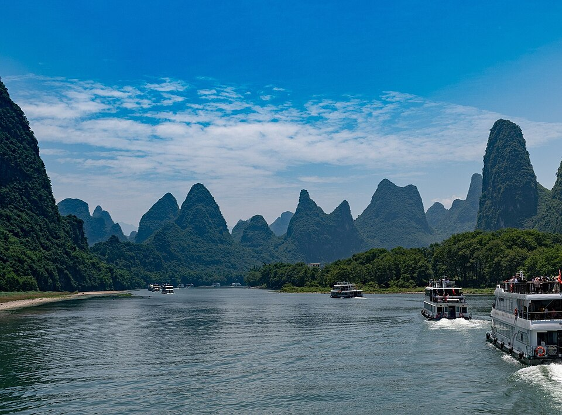
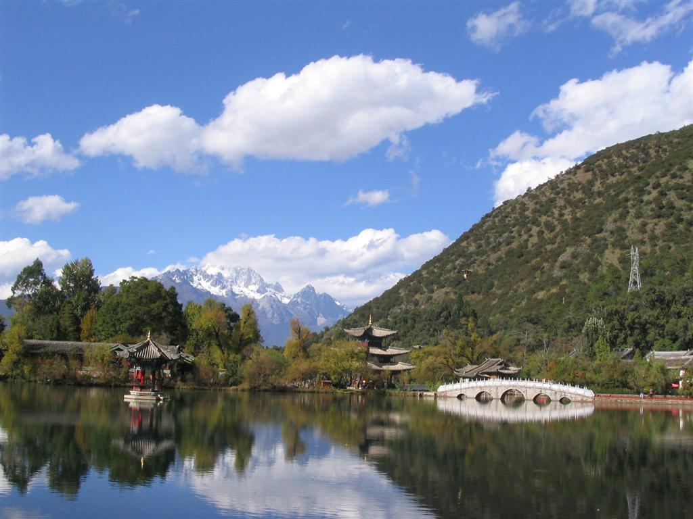
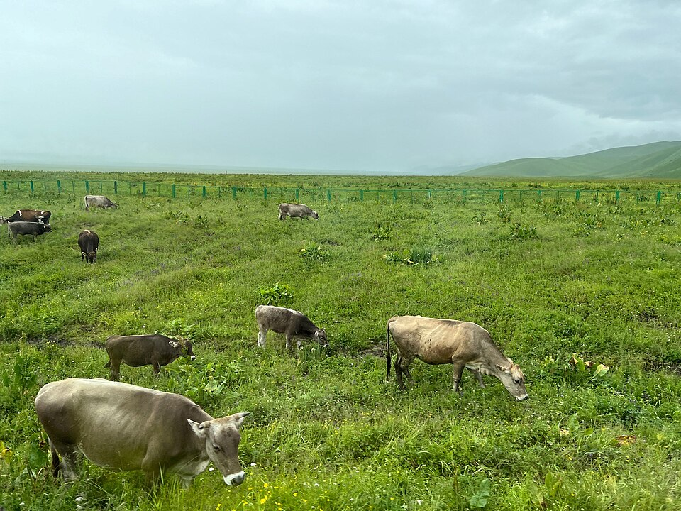
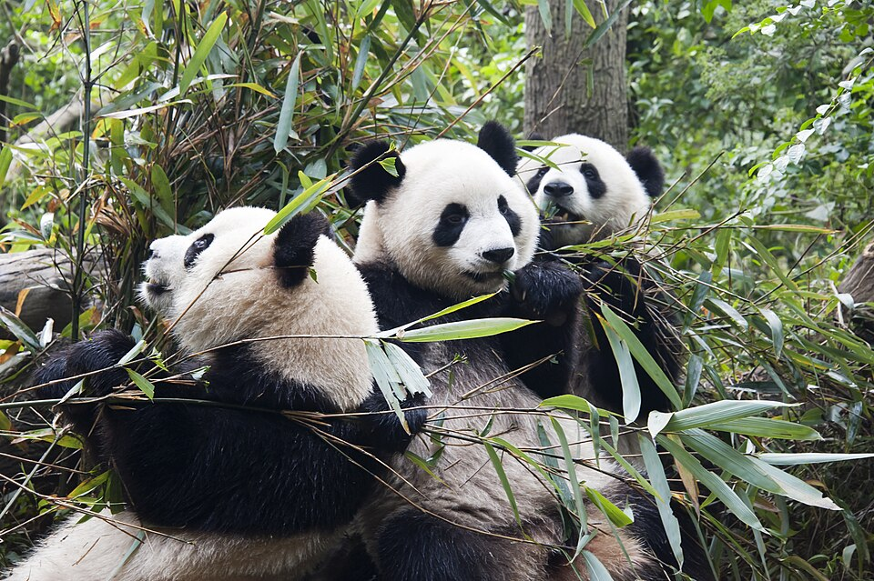
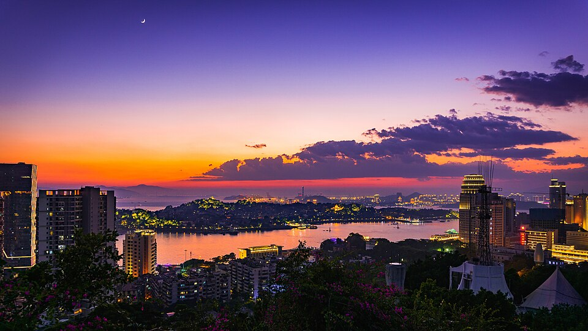
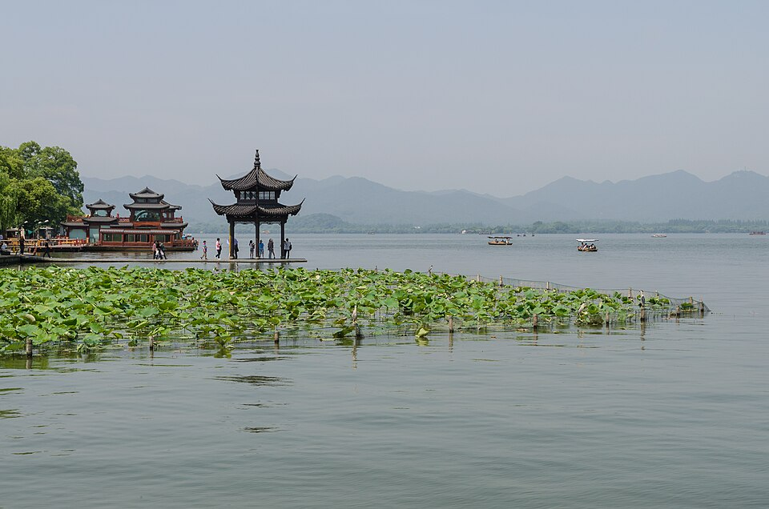

广西桂林漓江，喀斯特山水
摄影：Xiquinho Silva（xiquinhosilva）；Commons 裁剪版由 YuCheinSYQ 上传
目的地照片来自 Wikimedia Commons，感谢摄影师的分享。以下保留原作者署名、来源和许可。

摄影：Xiquinho Silva（xiquinhosilva）；Commons 裁剪版由 YuCheinSYQ 上传





摄影：Daniel Vorndran / DXR
CC BY-SA 3.0 · West Lake Pavilion and Water Lilies, Hangzhou 120529 1.jpg